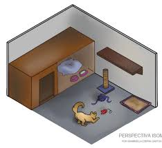

1. Problemas Locomotores

Gato no médico
Um dos primeiros sinais de velhice num animal são as dificuldades motoras. O seu gato pode
sofrer de artrites ou artroses. Contudo, pode não ser assim tão percetível num gato a presença
desta doença. Devemos ficar atentos aos seguintes sinais: não subir com tanta facilidade para
locais habituais, deixar de subir para locais habituais, começar a fazer as fezes fora da caixa de
areia ou deixar de comer/beber.